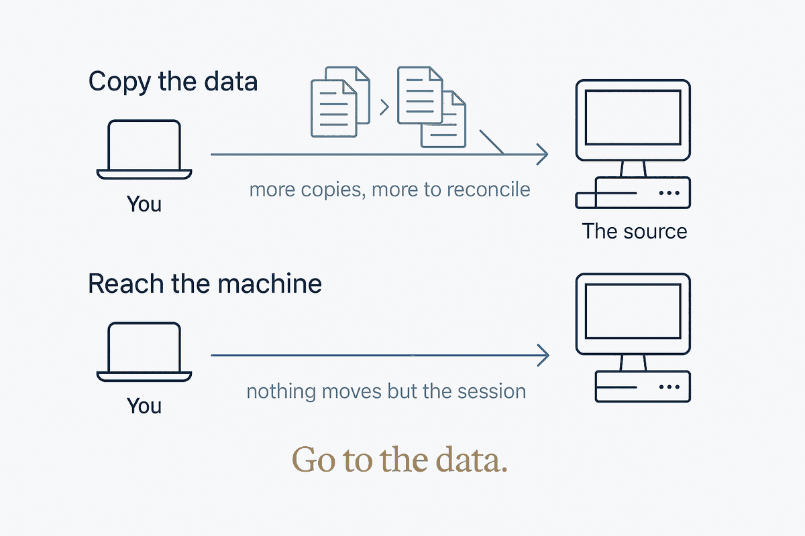
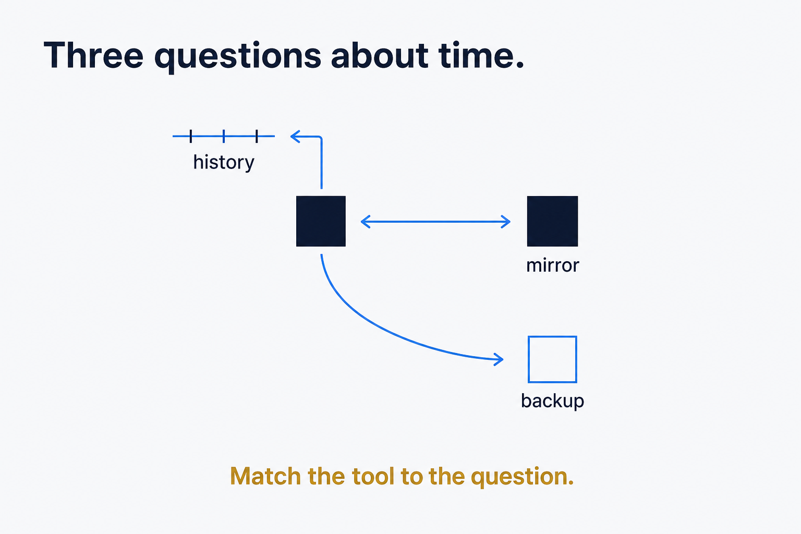
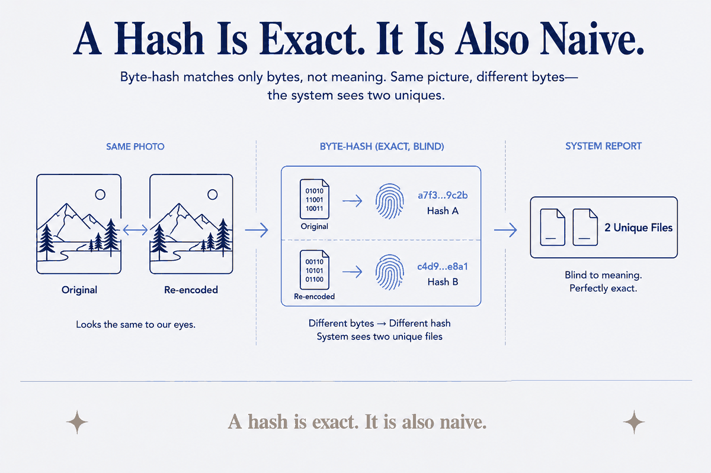
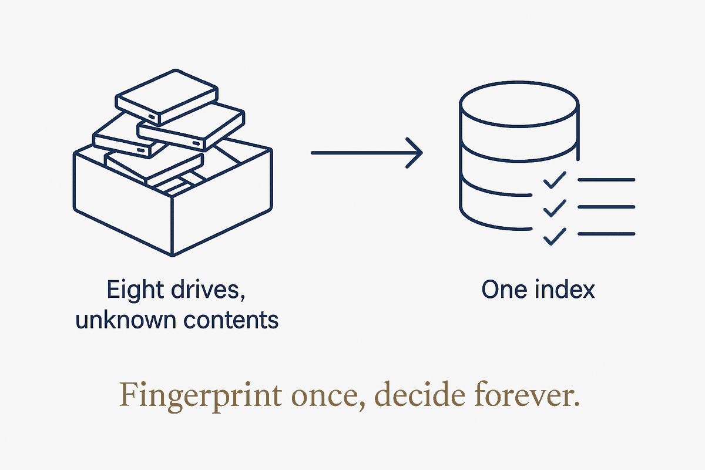
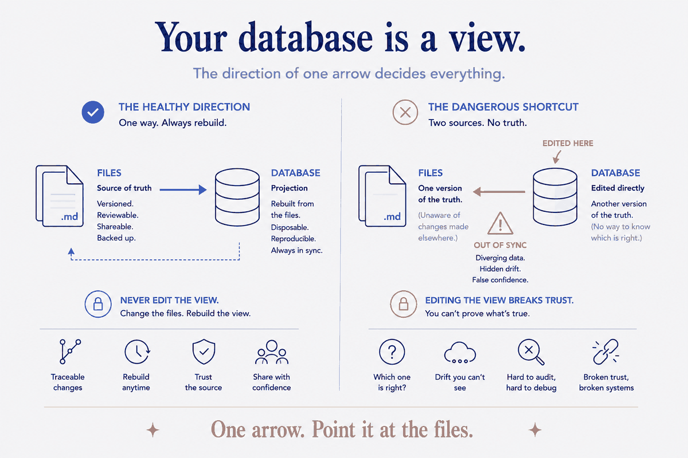
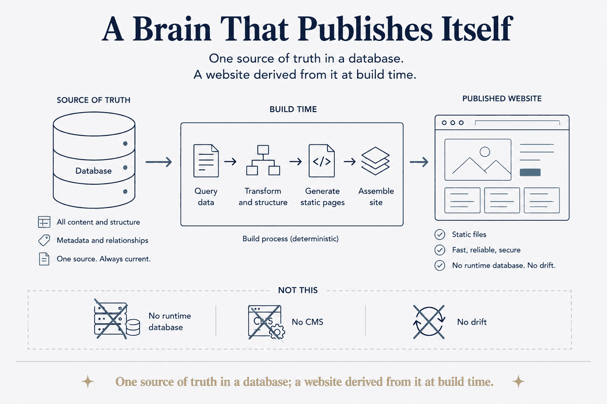
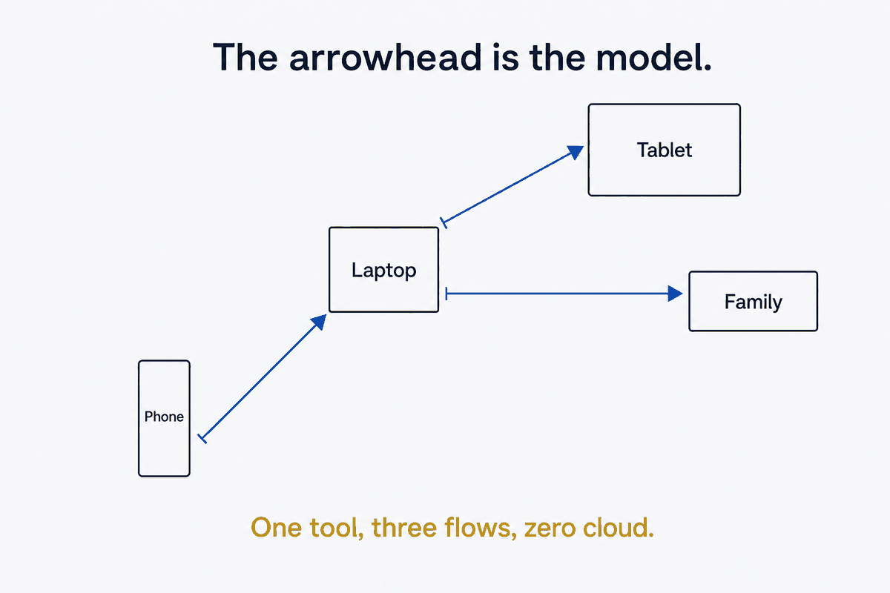
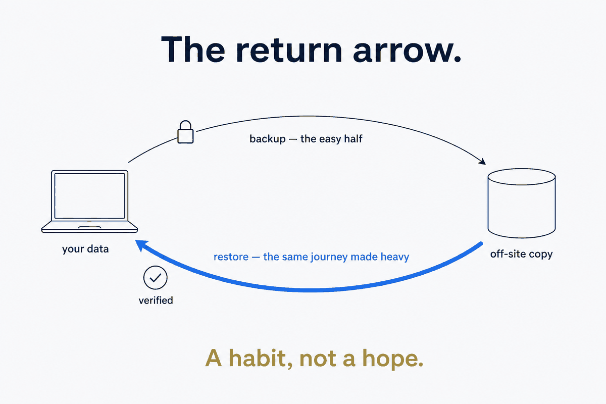
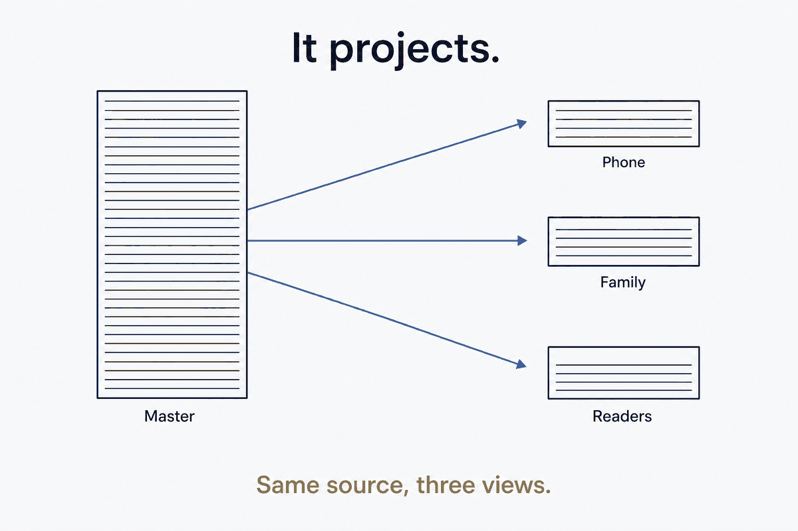

Sync, backup, history and publishing. The plumbing that keeps your files the source of truth. Newest first.

For builders & teamsSync brings the data to you. Sometimes you need the opposite — to reach the machine where the data already lives, without opening a single port to the internet.

For builders & teamsSyncthing replicates, Restic protects, Git remembers. Ask one of them to do another's job and it will fail you politely, at the worst possible moment.

For knowledge workersI turned a shoebox of old drives into a database — every file fingerprinted, deduplication reduced to a single SQL query. It worked better than I expected, right up to the moment it confidently told me two identical photos were different. That's where the interesting part starts: knowing exactly what your certainty is blind to.

For knowledge workersA shoebox of old hard drives is a dread task everyone postpones: what's on them, what's worth keeping, what's safe to destroy? I stopped clearing them one at a time and built a small system instead — an index that makes each drive cheaper than the last, and a gate that never lets me delete before the data is safe. Structure beats effort, even here.

For builders & teamsThe files are canonical. The database is a rebuildable projection of them. Get that one arrow the right way round and everything downstream — queries, AI, sync — becomes trustworthy. Get it backwards and your data quietly rots.

For builders & teamsOne source of truth in a database, a website derived from it at build time. No CMS, no runtime database, no drift.

For builders & teamsPhone photos in, vault views out, a folder shared with family — three different sync-flows, one tool, and folder-type as the security boundary.

For builders & teamsEncrypted at the client, deduplicated, EU-resident, about €60 a year. But the setup isn't the point — the restore-test is. Backup is a habit, not a hope.

For knowledge workersYour master vault is for you. Your phone, your family, and eventually your readers each need a different view. Stop syncing it — start publishing it.